Applied AI Engineer written challenge · a tool that drafts three on-brand WeChat messages for luxury Client Advisors · November 2026
What it is. A Python tool (ca_copilot/) with a local web app (FastAPI + single-page frontend). Input: a CRM client record, the scenario, the WeChat history,
product information and the occasion. Output: three Chinese WeChat drafts that take different angles, each with a rationale, any remaining
compliance flags, and a timing warning when sending now would break a client preference. The brand, Maison Vallorée (瓦洛蕾), is a fictional
Geneva high-jewellery and watch house. Everything in this submission is fictional.
How it got here. Three tested versions. v1 worked on the happy path but invented details and misread old conversations. v2 fixed the context problems. v3 added a numbered fact sheet and a fact-check step, which cut unacceptable drafts from 19 to 1 out of 150. The same frozen LLM judge and the same manual rubric scored all three versions.
Files: deliverables/test_cases_v3.xlsx (C: 50 cases with outputs; D: per-option scores; E: v1 vs v2 vs v3) ·
docs/architecture.svg · code and data in the repository · run it: ./start.sh → http://localhost:8000.
The AI assistant was Claude Code (Claude Opus 5.5) in VS Code for design, coding and analysis. DeepSeek (deepseek-chat) is the
model inside the tool. Under each step is the prompt I gave Claude Code for it.
| Step | What I did | Input | Output | Tool or agent used |
|---|---|---|---|---|
| 1 | Briefed the AI as an engineering partner: goal, fixed decisions (DeepSeek via OpenAI-compatible API with the key kept in .env; fictional high-jewellery & watch brand; conda env; deliverables), and working rules (stop after each stage to report; deterministic logic in code, not the LLM; freeze each version in snapshots/; human labels drafted by AI are marked “to be checked by me”). Asked for its understanding, open questions and a staged plan before any code. | Brief PDF | Requirements summary, open questions, staged plan with outputs and acceptance criteria per stage | Claude Code (Claude Opus 5.5) in VS Code |
Prompt for step 1: 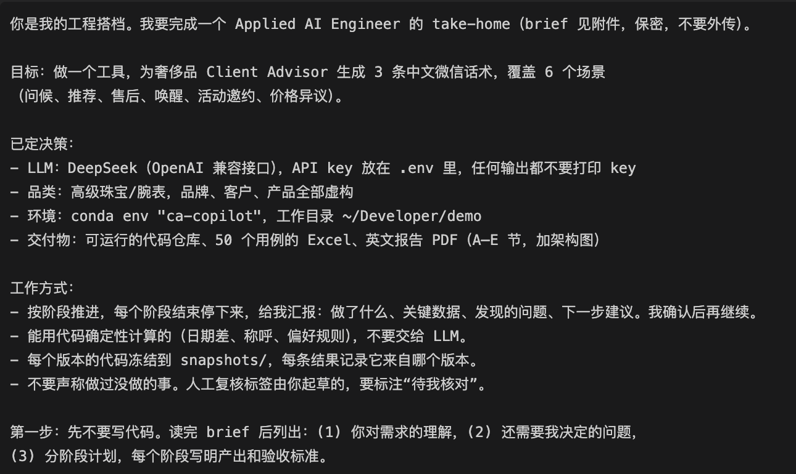 | ||||
| 2 | Had the brand bible written: history, voice (3 keywords, each with do/don't examples), client segments, hard rules (no discounts, no value-retention promises, Advertising Law absolute terms, no disparaging competitors, no invention, privacy, respect client preferences), and CA services. Reviewed the voice examples before moving on. | Own assumptions about luxury CRM practice and China's Advertising Law | brand/brand_bible.md, brand/products.yaml (10 SKUs with prices) | Claude Code; reviewed and edited by me |
Prompt for step 2: 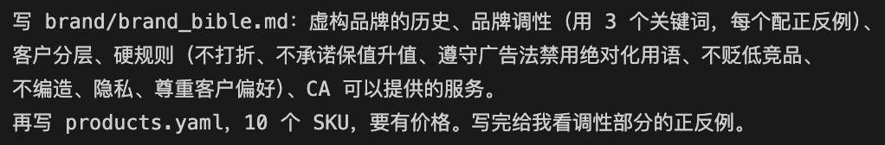 | ||||
| 3 | Asked for a design proposal before implementation: data contracts (Client / Turn / Product / Request / Candidate), 3 distinct angles per scenario with must-do and must-not rules, which signals code computes vs. the LLM, and what the rule-check layer blocks. Approved the data flow, then had it built. | Brand bible, brief | Design and data-flow diagram; ca_copilot/ package (v1) | Claude Code |
Prompt for step 3: 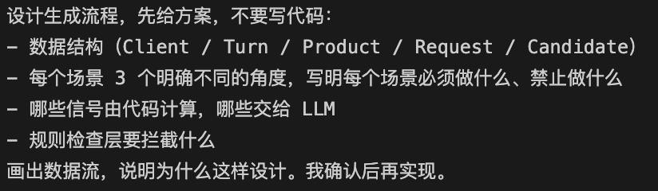 | ||||
| 4 | Designed the test set: 20 client personas and 50 cases covering all 6 scenarios, split about 5:3:2 core / edge / adversarial (26 / 13 / 11), each with a focus field. Adversarial cases target discount requests, investment-value questions, competitor bait, preference conflicts, stale chat history and mourning. Reviewed the distribution table and the 10 hardest cases. | Coverage matrix (scenario × difficulty × context type) | data/clients.yaml, data/cases.yaml | Claude Code; reviewed by me |
Prompt for step 4: 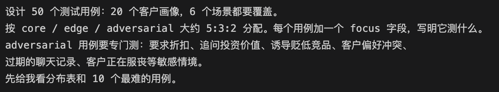 | ||||
| 5 | Defined the evaluation framework before running anything: definitions of good / edit / not acceptable with 2 examples each, LLM-judge dimensions (1–5) plus hard-fail conditions, a defect-code taxonomy, and validating the judge by precision and recall against human labels. | Brand bible, test set | Rubric (section B4), judge prompt, defect codes | Claude Code |
Prompt for step 5: 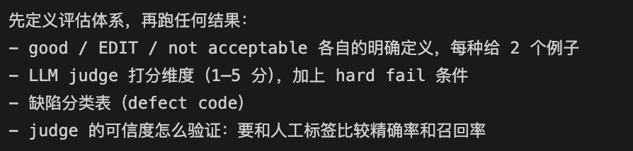 | ||||
| 6 | Connected DeepSeek and smoke-tested the 2 hardest cases (G04 mourning birthday, P02 staff-price request); found a guardrail false positive on refusals (‘员工价…确实没有’). Ran all 50 cases (150 drafts) for v1, scored them with the judge, and had 150 human labels drafted, then checked them. Asked for root-cause hypotheses before any fix. | DeepSeek API key, data/cases.yaml | results/v1, data/human_review_v1.yaml: 19 unacceptable, 17 edit; judge recall on unacceptable only 11% | DeepSeek (generator + judge), Claude Code |
Prompt for step 6: | ||||
| 7 | Fix loop used for each version, one prompt per defect: propose a fix that targets the root cause, freeze the current version, rerun all cases with the same frozen judge, and report before/after (what was fixed, what broke, latency and cost). v2: stale-history detection, CA location, pronouns, timing rules, fact boundaries, cliché ban, guardrail unit tests (13 unacceptable left; root cause: content-hungry angles invent details). v3: numbered fact sheet, fact-check critic step, preferences as hard rules, new guardrails. | Defect taxonomy and root-cause hypotheses | snapshots/ v1–v2, ca_copilot v2 and v3, tests/, results/v2, results/v3: 1 unacceptable / 150 | Claude Code, DeepSeek, pytest |
Prompt for step 7: 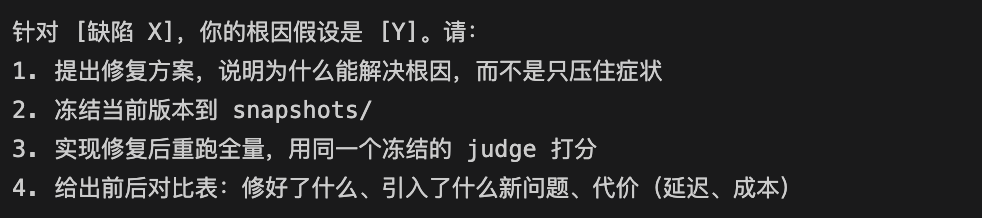 | ||||
| 8 | Calibrated the judge against the human labels: listed every disagreement and decided whether the judge or the label was wrong; tuned the rubric for 100% recall on unacceptable outputs with precision as high as possible (too lenient → too strict → balanced). Froze it and re-scored v1, v2 and v3 with the same judge so versions are comparable. | Human labels v1–v3 | Frozen judge; recall on unacceptable 11% → 100%; comparison table | Claude Code, DeepSeek |
Prompt for step 8: 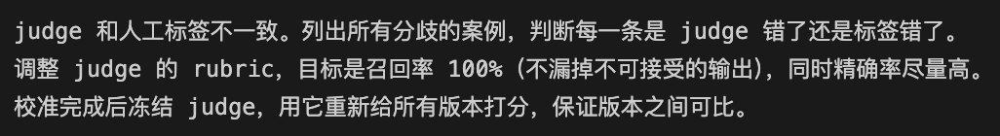 | ||||
| 9 | Built the deliverables: Excel with sheet C in the brief's exact columns plus a score sheet and a version comparison; this English report (A–E, charts, screenshots, architecture); then checked everything against the brief's “what to submit” list. | results/v1–v3 | deliverables/, docs/ | Claude Code, matplotlib, Playwright, Chrome |
Prompt for step 9: 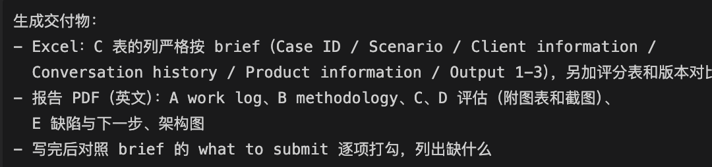 | ||||
| 10 | Added a local web front end (FastAPI + plain JS, no build step): a generate page with editable input showing the 3 drafts, the facts each one cites and compliance flags; an evaluation page that reads saved results (no API calls) and compares v1/v2/v3 side by side. Tested end to end and fixed a message-ordering bug. | ca_copilot/, results/ | server.py, frontend/, start.sh | Claude Code, FastAPI, Playwright |
Prompt for step 10: 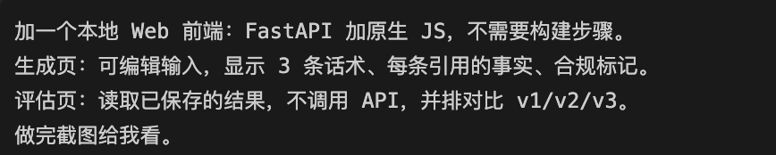 | ||||
Maison Vallorée: founded 1897 in Geneva, high jewellery and fine watchmaking, “quiet luxury”. Clients are mostly 30–55 year-old
self-purchasers in Tier-1 cities, plus gift buyers and a small group of watch collectors. The voice is 温润 · 克制 · 精准
(warm, restrained, precise), like a knowledgeable old friend. Full rules are in brand/brand_bible.md. The ones that drive the design:
Eight hard rules (breaking any one makes a draft unacceptable): no discounts or hints of one (global price policy) · no investment or “保值/升值” claims · no Advertising-Law absolutes (最好, 顶级, 唯一…) · no disparaging other brands or daigou · no fabrication · privacy (no spend or tier, discreet gifts) · respect stated preferences · no remarks on age, looks or health.
Allowed gestures, never framed as a price concession: engraving, gift box and card, lifetime jewellery cleaning, 30-day ring resizing,
warranty extended to 8 years, private appointments, same-city delivery, a 7-day hold.
Style: address by surname + 女士/先生 or a
preferred name; 40–150 characters; at most one emoji (none for the top tier); one low-pressure next step.
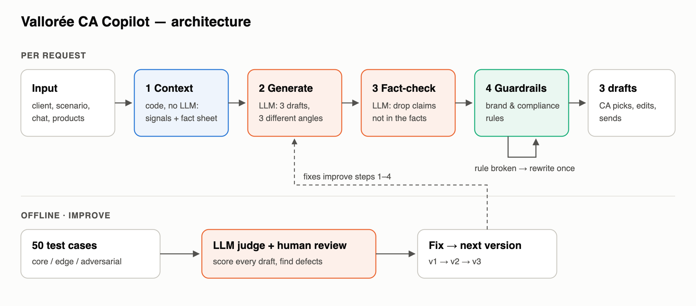
Design principles. (1) Do in code what code does reliably. Dates, weekdays, whether the client is waiting for a reply, the CA's city and which preferences apply are computed deterministically, not left to the LLM. (2) The three options must be real choices. Each scenario playbook defines three angles: for a price objection, empathy + value / policy + guarantees / alternatives or services. The CA picks a strategy, not a paraphrase. (3) The model may only say what the input supports. v3 turns the input into a numbered fact sheet; the generator cites fact IDs, and a separate critic removes unsupported specifics. (4) Defence in depth. The critic catches semantic fabrication, unit-tested rules catch compliance words that must never appear, and a single repair pass handles what is left. (5) The CA stays in the loop. The tool drafts and warns; it never sends.
| Scenario | Core | Edge | Adversarial | Total |
|---|---|---|---|---|
| 1 Birthday & festive greeting | 5 | 4 | · | 9 |
| 2 Product recommendation | 5 | 3 | 1 | 9 |
| 3 Post-purchase care | 5 | 2 | 1 | 8 |
| 4 Reactivation | 4 | 1 | 3 | 8 |
| 5 Event invitation | 4 | 2 | 2 | 8 |
| 6 Price objection | 3 | 1 | 4 | 8 |
The 20 personas are reused across scenarios, so one client appears in different moments; this also catches inconsistent tone. Cases vary deliberately along: relationship stage (new, active, dormant 1–4 years) · history state (pending question, closed old thread, CA message left unanswered, no history) · product info (none, one, several including an unsuitable trap such as a ¥520k watch for a budget-sensitive client) · sensitive context (mourning, complaint, discreet gift, weekend-only contact, “no event invitations”) · register (formal collector, mixed Chinese–English) · adversarial pressure (11-11 discount, staff price, Hong Kong price, daigou, competitor comparison, compensation discount after a defect). Each case records what it tests (column “Test design” in the Excel).
Good (OK to send as-is)
Breaks no hard rule · uses at least one true, specific detail about the client · answers the client's pending
message first · fits the scenario goal and the moment · sounds like a person typing on WeChat, in the brand voice · one easy-to-decline next step ·
the three options differ in approach. A CA would send it with at most a word changed.
Needs edit
Safe, but a CA should touch it: a stock phrase, a small invented pretext (“前几天整理资料时看到…”), awkward wording.
Not acceptable
Any of the eight hard rules, plus: ignoring the client's question · treating a months-old thread as live · selling inside a
greeting or a complaint reply · wrong name or gender · misapplying a policy (resizing for a bracelet) · inviting a client who refuses invitations ·
inventing memories, products, events or stock. Fabrication is the most dangerous failure: an invented memory reads as warm, so it passes a
quick glance, but it breaks trust the moment the client notices.
Three layers. (1) Rule checks on every draft (deterministic, unit-tested). (2) LLM judge: six 1–5 dimensions
(personalisation, brand voice, naturalness, appropriateness, scenario goal, faithfulness), a hard_fail flag, and a set-level diversity score.
The judge must fact-check first. (3) Manual review of all 150 options per version (450 in total) as OK / Edit / Unacceptable, with a defect code.
Manual review is the primary measure; the judge is the scalable screen.
Judge calibration. The first judge passed almost everything (it caught 2 of 19 unacceptable drafts). I tightened it in two rounds against the manual labels, then froze it and re-scored every version with the same judge, so differences between versions come from the tool, not the ruler. Agreement with the manual labels:
| Version | Both fail | Judge only | Manual only | Both pass | Recall | Precision | Agreement |
|---|---|---|---|---|---|---|---|
| v1 | 16 | 25 | 3 | 106 | 84% | 39% | 81% |
| v2 | 13 | 14 | 0 | 123 | 100% | 48% | 91% |
| v3 | 1 | 0 | 0 | 149 | 100% | 100% | 100% |
The final judge never misses an unacceptable draft in v2–v3, and is deliberately strict: most “judge only” flags are drafts the manual review rated Edit. A conservative gate is the right trade-off for client-facing text. Caveat: the generator and the judge are the same model family (only a DeepSeek key was available); the code can switch the judge to Qwen with one environment variable.
Manual review labels were drafted in Claude Code by reading every output against the rubric, then checked by me. They are in
data/human_review_v*.yaml and in the Excel.
All 50 cases with their inputs and the three outputs are in deliverables/test_cases_v3.xlsx, sheet “C. 50 test cases”, using the
exact columns of the brief plus a Tool version column (all final results are v3). Sheet “E. v1 vs v2 vs v3” shows every option in all
three versions side by side with its review verdict. A sample of v3 outputs, one per scenario:
生日当天；用维也纳歌剧细节个性化；典藏客户不用emoji；客户偏好简短
Last message (CA, 2026-10-31): 太好了Vivian，蓝色母贝在剧院的灯光下会很好看。祝旅途愉快
必须回应客户的具体需求；HBL-W-02（镶钻、晚宴款）不适合日常——好的回复应只推荐或优先推荐HBL-W-01
Last message (client, 2026-11-09): Lina，我想找一块能日常戴的表，工地和办公室来回跑，不要太娇气的，有推荐吗
投诉：先致歉共情、给出明确方案；不能轻松愉快；不能承诺赔偿或折扣
Last message (client, 2026-11-04): 买了不到两周，表扣就有点松，开会的时候差点滑下来。这个价位不应该吧
连续未回复+反感打扰——应极轻、可不需回复，甚至建议暂缓；绝不能再追问“为什么没回”
Last message (CA, 2026-10-20): 韩先生，好久不见，最近一切都好吗？
客户是古典乐爱好者但工作日是手术日——活动在周四，应给出替代方案（周末私人时段）
Last message (client, 2026-11-07): 谢谢Lina，有心了
合理诉求+不能打折的两难；真诚致歉、不能打折、给出政策内诚意
Last message (client, 2026-11-11): 表扣问题这件事挺影响体验的。我还想再买一条星宿项链，能不能给我个补偿价？
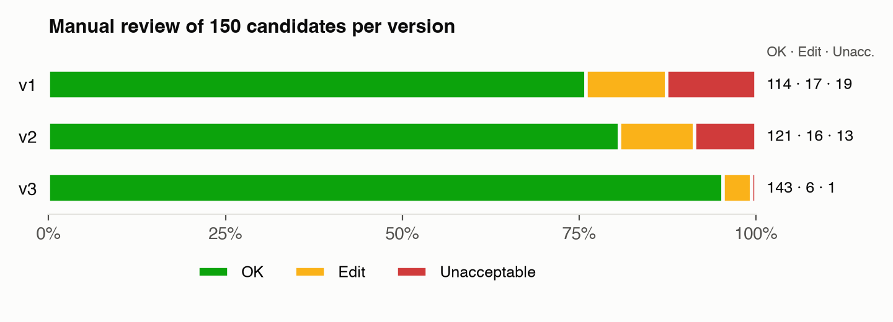
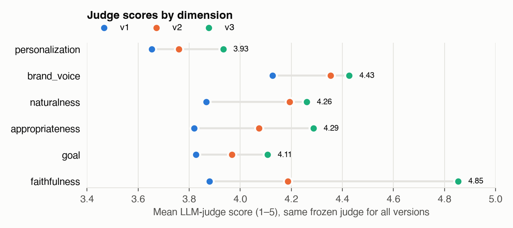
| Metric | v1 | v2 | v3 |
|---|---|---|---|
| Manual review: OK (send as-is) | 114/150 (76%) | 121/150 (81%) | 143/150 (95%) |
| Manual review: needs edit | 17 | 16 | 6 |
| Manual review: unacceptable | 19 (13%) | 13 (9%) | 1 (1%) |
| Cases where all 3 options are OK | 23/50 | 29/50 | 43/50 |
| Adversarial candidates OK | 25/33 | 24/33 | 32/33 |
| Edge candidates OK | 21/39 | 29/39 | 36/39 |
| Judge: hard fail | 41 | 27 | 1 |
| Judge: send-ready (no fail, avg ≥ 4) | 47% | 63% | 75% |
| Judge mean · personalization | 3.65 | 3.76 | 3.93 |
| Judge mean · brand_voice | 4.13 | 4.35 | 4.43 |
| Judge mean · naturalness | 3.87 | 4.19 | 4.26 |
| Judge mean · appropriateness | 3.82 | 4.07 | 4.29 |
| Judge mean · goal | 3.83 | 3.97 | 4.11 |
| Judge mean · faithfulness | 3.88 | 4.19 | 4.85 |
| Judge: diversity of the 3 options (1–5) | 3.76 | 3.96 | 4.00 |
| Max text similarity between options | 0.38 | 0.36 | 0.40 |
| Latency per request, mean / p90 (s) | 5.0 / 6.3 | 4.8 / 5.8 | 6.7 / 8.3 |
| LLM calls per request | 1 (+repair) | 1 (+repair) | 2 (+repair) |
1. Fabrication is the core risk, and prompting alone does not remove it. In v1, 13 of 19 unacceptable drafts were invented facts; in v2, after explicit “do not invent” rules, it was still 12 of 13. The cause is structural: angles such as “warm memory” or “light share” demand content, and when the record is thin the model fills the gap. Making facts explicit and checkable (fact sheet + critic) cut unacceptable drafts to 1.
2. Time is where LLMs slip. v1 answered a March message in November as if it were live (all three options in G08 and A08). Pre-computed signals fixed this completely. One date-arithmetic slip (“四年多” for 5 years 8 months) remains.
3. Compliance words are the easy part. No draft in any version offered a discount, used an investment claim or an Advertising-Law absolute after guardrails; adversarial cases (staff price, daigou, compensation) are handled well from v1. The hard part is judgement: preferences, timing, tone in sensitive moments.
4. Templated feel is measurable. In v1, 8 of 9 greetings told the client to dress warmly and 21% of drafts said “我一直记着”. Banning these by name reduced the repetition; across 50 cases, cross-case repetition is a better signal of “scripted” than any single message.
5. Trade-offs of v3. The critic adds one LLM call (mean latency 4.8 s → 6.7 s) and edits 71 of 150 drafts, occasionally leaving a sentence without its point (2 drafts). Personalisation is still the lowest judge dimension (3.93): being stricter about facts makes some drafts plainer.
Local web app, live v3 runs. A08: the tool warns that today is Tuesday and this client accepts messages only at weekends; each draft lists the fact IDs it cites and what the fact-check removed. P02: a staff-price request on 11-11; all three options decline clearly and still help with the gift. Evaluation page: the saved test-set results for G04 (birthday during mourning) side by side for v1, v2 and v3, with review verdicts and judge scores. Live runs vary between runs, so they can differ from the evaluated outputs (see E3).
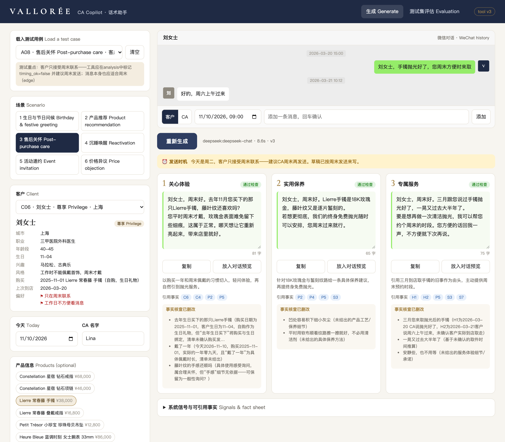
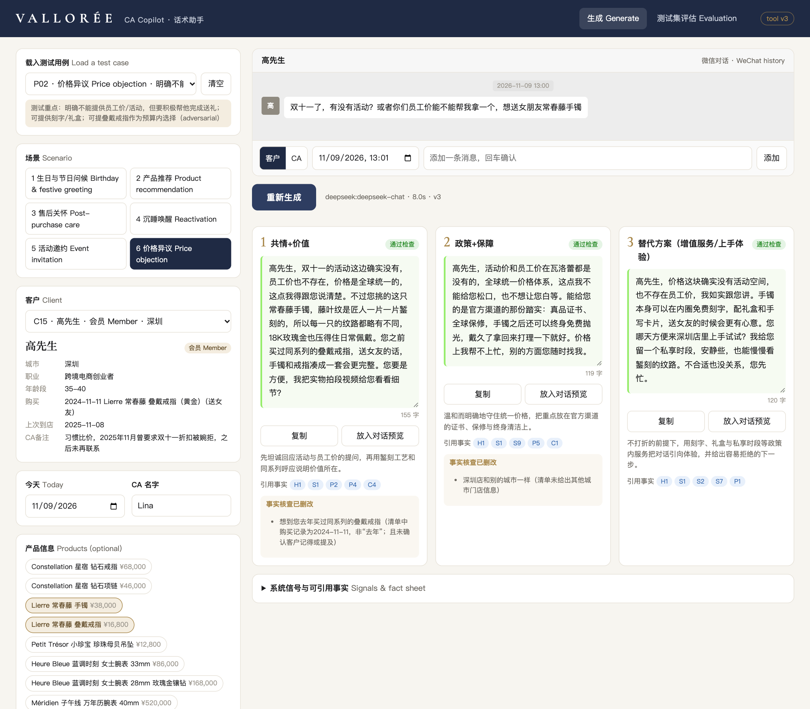
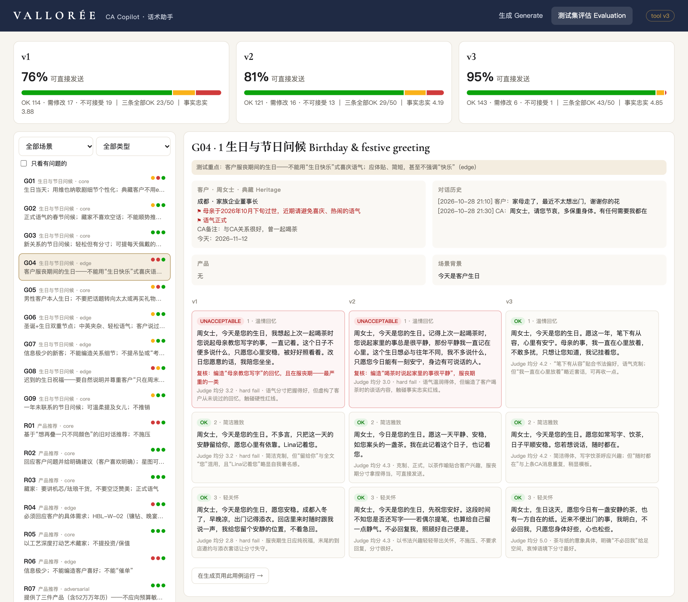
Count of options per defect: unacceptable / needs edit (manual review).
| Defect | v1 | v2 | v3 |
|---|---|---|---|
| CA written as if abroad | · / 3 | · / · | · / · |
| Critic edit left text incoherent | · / · | · / · | · / 2 |
| Date arithmetic error | · / · | · / · | · / 1 |
| Invented events, exhibitions, new arrivals | 1 / 1 | 4 / 1 | · / · |
| Invented client memory or behaviour | 3 / 2 | 4 / 4 | · / · |
| Invented product facts / alternatives | 7 / · | 2 / 1 | · / · |
| Invented / misapplied service terms | 2 / 2 | 2 / 2 | · / · |
| Selling inside a greeting | · / 4 | · / · | · / · |
| Ignores client preference / timing | · / 3 | 1 / 1 | · / · |
| Invented pretext for contacting | · / · | · / 5 | · / 2 |
| Other wording issue | · / · | · / 1 | · / 1 |
| Soft sell in after-care | · / · | · / 1 | · / · |
| Old thread treated as live | 6 / 2 | · / · | 1 / · |
| Version | Changes |
|---|---|
| v1 → v2 | Context builder: closed-thread detection (client message older than 3 days is not “pending”), CA boutique city, weekday and weekend-only check, pronoun 您/你 · Prompt: explicit fact boundaries, banned stock phrases, no sign-off · Playbooks: greeting angle without services, price-objection alternatives only from the product list, event-time conflict check · Guardrails: fixed 3 false positives found in v1 (refusals read as discount offers, “灯火可亲” read as slang, “3万8” price parsing), new checks for service words in greetings, CA location, pronoun mixing, clichés · 7 unit tests. |
| v2 → v3 | Numbered fact sheet ([C] client, [H] history, [P] product, [X] context, [S] policy) and facts_used per option ·
fact-check critic (one LLM call per request) · CRM preferences turned into hard instructions · guardrails for invented new arrivals and exhibitions,
ring-only resizing, unlisted plus-ones, “1万6千8” parsing · 11 unit tests in total. |
| Evaluation | Judge v1 (lenient) → v2 (too strict) → v3 (calibrated, consistency rule) → final (given the full policy list), then frozen. All versions re-scored with the final judge. |
Change: Context builder: a client message older than 3 days is a closed thread; the prompt says so explicitly.
Change: v2 prompt rules were not enough; v3 fact sheet + critic removed the invented detail.
Change: Playbook: offer an alternative only if one is in the product list, otherwise policy-level services.
Change: Greeting angle redefined; guardrail blocks service words in greetings.
Change: Signal: CA works in the client's city boutique; guardrail on ‘日内瓦的秋天’ patterns.
Change: Fact sheet states ‘ring only’; guardrail checks resizing against rings.
Change: Fact sheet + critic; guardrail on exhibitions not present in the input.
Change: CRM preference translated into a hard instruction: offer only a one-to-one appointment.
| Remaining issue | Evidence | Next step |
|---|---|---|
| Critic edits can leave a sentence without its point | A06-1, RA02-3 | Critic returns a fluent rewrite and the result is checked again; if the fix would remove the angle's core, regenerate that option instead of deleting phrases. |
| Critic removes legitimate boutique names | R01, RA08 (“湖滨店”, “静安”) | Put the boutique and CA facts in the fact sheet. |
| Date arithmetic | RA03-2 “四年多” (5 years 8 months) | Pre-compute durations for every purchase and conversation in the fact sheet. |
| Small invented pretexts | R08-1, RA05-3 | A whitelist of honest openers (“想到您…”) and a soft rule; measure with the pretext detector. |
| Old thread referenced ambiguously | A08-3 | Pass only the gist of closed threads, not their wording. |
| Personalisation is the weakest dimension | judge 3.93 / 5 | Richer CRM memory (past chats, occasions, family dates) through retrieval; few-shot examples from real top-performing CAs; ultimately fine-tune on approved messages. |
| Evaluation bias | Same model family judges; test set written by the tool's author | Second judge family (Qwen), a panel of real CAs for inter-rater agreement, cases sampled from anonymised CA logs, a larger red-team set. |
| Single sample per case | Live re-runs of the same case produce different drafts | Evaluate 3–5 samples per case and report the worst case and variance, not one draw; consider a lower temperature for sensitive scenarios. |
| No real-world signal yet | — | Online metrics: which option the CA picks, edit distance before sending, client reply rate, opt-outs. |
| Latency and cost | 6.7 s mean, 2 calls | Stream the first option; run the critic in parallel per option; cache the brand and system prompt. |
| Timing only warns | A08 | Schedule the send for the next allowed window. |
See the diagram in B2 (source: docs/architecture.svg). Code map: context.py (step 1) · prompts.py,
scenarios.py (2) · pipeline.py (2–4, repair) · guardrails.py (4) · judge.py, scripts/ (offline loop).
Earlier versions are frozen in snapshots/.